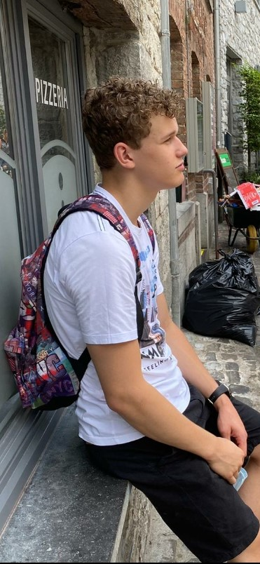

Wie ben ik?

Klik op de foto voor meer informatie over Mathijs de Jong
Waarom de opleiding software development?
Waarom heb ik voor deze opleiding gekozen?:
Dit was de enige opleiding doe mij echt aansprak. Ik wilde eerst de economie kant op, maar de opleidingen van economie op mbo4 sprak mij niet aan. Ik had altijd al interesse gehad in coderen. Alleen ik liep altijd snel vast als ik iets wilde doen. Ik heb een aantal dingen geprobeerd waaronder: Youtube gekeken, Game maken, Cloud maken met eigen server. Zodra het mij gelukt was deed ik er niks meer mee. Ik dacht als ik deze opleiding ga doen dan blijf ik er mee bezig en heb ik een basis kennis voor de opleiding IT & management.
Hoe zorg je ervoor dat je gemotiveerd blijft?:
aan je doel blijven denken.
Wat ben je bereid om na de lessen nog te doen aan de opleiding?:
Dat hangt denk ik van de opdracht af de een spreekt me meer aan dan de ander, maar tot nu toe ben ik gemotiveerd gebleven.
Ontwikkelpunten:
Basis kennis dat ik een aantal dingen kan doen zonder erbij na te denken.
Beter worden in Engels.
Vooropleiding:
IJsselcollege, mavo.
Bijbanen/stage:
Plus Verhoeven: Leidinggeven, communicatie, werkomgeving
WTI: IT bedrijf heb ik stage gelopen, werkomgeving, motivatie voor de IT wereld gekregen.